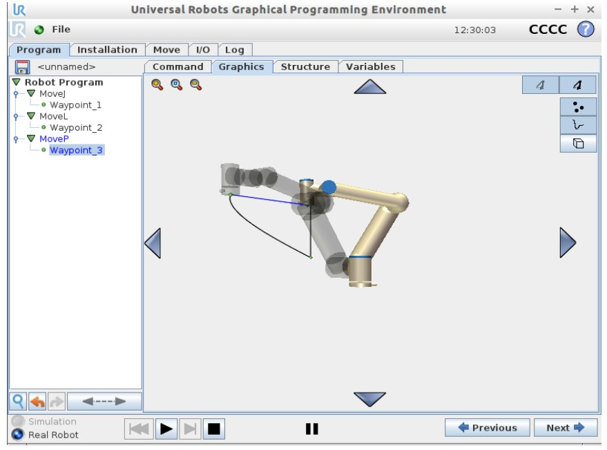

项目七：UR机械臂控制仿真
机器人学实验

项目介绍
项目简介：基于VMWare和URSim构建UR机械臂仿真运行系统并对其实现运动控制
主要工作：URSim 编程实现机械臂运动控制； TCP 通信调试软件实现机械臂运动控制；通过 python socket 将脚本程序字符串发送给 URSim，实现对机械臂的运动控制
项目成果
• 实现了通过URSim编程、通信调试工具、高级编程语言（python）三种方式进行机械臂的运动控制
关键技术
- URSim
- TCP通信
- python